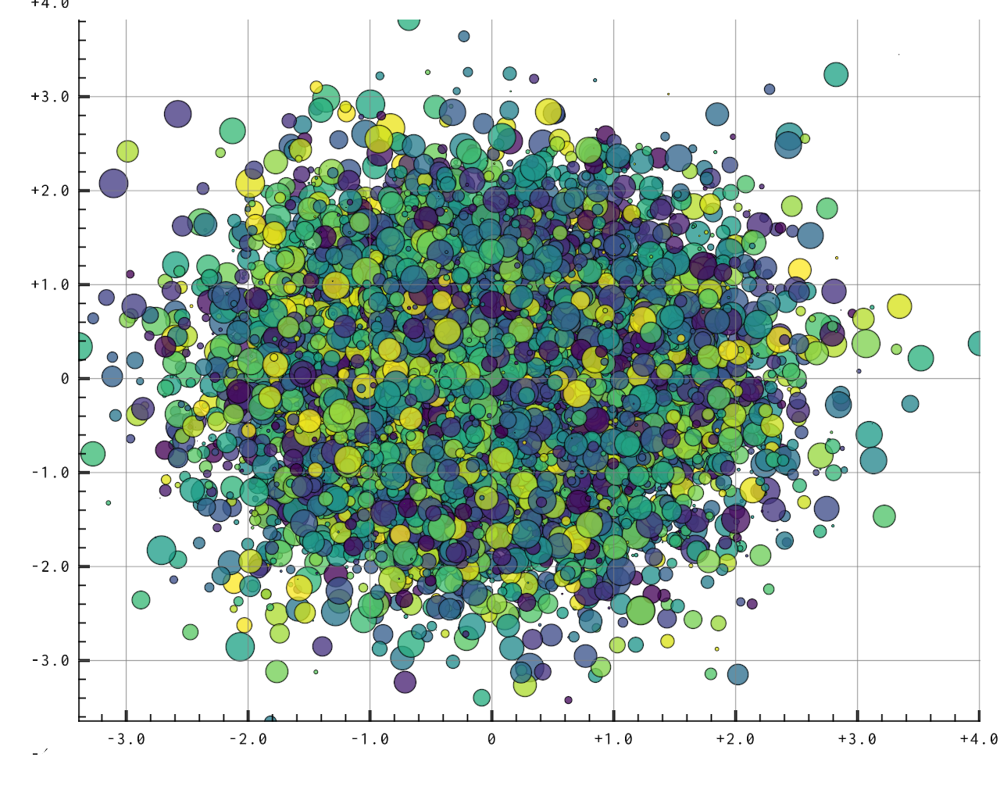

Quickstart: using Datoviz in Python¶
In this tutorial, we'll cover the most important features of Datoviz by creating a 2D raster plot in Python.

We'll cover the following steps:
- how to create an application,
- how to create a canvas,
- how to create a panel with an axes controller,
- how to add a visual,
- how to use a colormap,
- how to set visual data,
- how to run the application,
- how to create a graphical user interface (GUI),
- how to specify event callbacks,
- how to implement mouse picking.
More advanced topics are covered in the How to section of the documentation.
Importing the library¶
Datoviz can be used from a Python script, or interactively in IPython.
Note
Interactive use in IPython is still experimental.
First, we import NumPy and datoviz:
import numpy as np
import numpy.random as nr
from datoviz import canvas, run, colormap
Creating a canvas¶
We create a canvas:
c = canvas()
The canvas() function accepts a few keyword arguments, including width and height for the window's initial size.
Creating a scene¶
In order to draw something on the canvas, we need to define a scene which implements plotting functionality:
s = c.scene()
The scene contains subplots (also known as panels) organized in a two-dimensional grid layout. The number of rows and columns may be specified by the rows and cols keyword arguments to the c.scene() method. By default, rows=1 and cols=1.
Canvas vs Scene
Why is there a distinction between the canvas and the scene? The canvas may be used by advanced users who need direct Vulkan access for anything that is not standard scientific visualization (interactive demos, video games, animations...) and who don't need/want the overhead of the scene API.
Creating a panel¶
Each "cell" in the grid layout of the scene is a panel. Every panel has a controller which defines how we interact with the panel's visuals. There are several built-in controllers. In particular, the axes controller displays axes and ticks for 2D graphics:
panel = c.panel(controller='axes')
Note
The controllers that are currently supported are: static, panzoom, axes, arcbcall, camera.
Choosing one of the existing visuals¶
The next step is to add a visual to a panel.
Here, we'll make a scatter plot with random points in different colors and sizes.
Datoviz comes with a library of built-in visuals. For our scatter plot, we'll choose a marker visual:
visual = panel.visual('marker')
Note
We could also have used a point visual, which is faster and more lightweight, but only supports square markers. Another limitation is that all squares must have the same size in the visual (this limitation may be lifted in the future).
Preparing the visual data¶
Once the visual has been created and added to the panel, we need to set its data. Visual data is specified with visual props (properties). The visual documentation provides all props supported by each visual.
Except from the universal pos prop which refers to the point positions, most props are optional and come with sensible defaults.
In this example, we'll just set:
pos: the marker positions,ms: the marker sizes,color: the marker colors.
We generate the data as NumPy arrays, and we pass them to the visual.
Marker positions¶
N = 10_000
pos = nr.randn(N, 3)
Note that positions always have three dimensions in Datoviz. When using 2D plotting, we just set the third component to zero.
Datoviz uses the standard OpenGL 3D coordinate system, with coordinates in [-1, +1]:
Datoviz coordinate system
Note
Vulkan uses a slightly different coordinate system, the main differences are:
yandzgo in the opposition direction,zis in[0, 1].
The conventions chosen in Datoviz are closer to existing graphics libraries.
The transformation from the Datoviz coordinate system to the Vulkan coordinate system is done at the final stage of data transformation in the vertex shader of all included visuals.
The point positions that are passed to Datoviz are defined in a data coordinate system. Datoviz takes care of the transformation into a normalized coordinate system that is more amenable to GPU interactive graphics.
Note
The data transformation pipeline in Datoviz only supports linear transformations at the moment. It will be improved soon.
Marker sizes¶
We define random marker sizes (in pixels) as an array of floating-point values:
ms = nr.uniform(low=2, high=40, size=N)
Marker colors¶
In Datoviz, colors are specified as either:
- arbitrary RGBA components, as
uint8bytes (four bytes per color), - colormaps.
Datoviz includes a library of ~150 colormaps commonly used in popular scientific plotting software. You can also define a custom colormap manually.
Here, we'll use the viridis colormap.
First, we define a scalar value for each point, which will be mapped to the colormap afterwards:
color_values = nr.rand(N)
We also prepare the alpha channel for transparency, from 0 (invisible) to 1 (opaque):
alpha = .75 * np.ones(N)
Next, we compute the RGBA colors using the colormap:
color = colormap(
color_values, vmin=0, vmax=1, alpha=alpha, cmap='viridis')
The variable color is an (N, 4) array of uint8 (byte values between 0 and 255). It can be passed directly to the color prop of our visual.
Set the visual data¶
Once the data has been prepared, we can pass it to the visual:
visual.data('pos', pos)
visual.data('ms', ms)
visual.data('color', color)
Running the application¶
Finally, we run the application by starting the main event loop:
run()
IPython integration
If you are in IPython's interactive terminal, you should do %gui datoviz first, and omit the call to run().
Event callbacks and mouse picking¶
Important
From now on, all of the code snippets need to be added before run().
We'll write a callback function that runs whenever the user clicks somewhere in the canvas. It will display the coordinates of the clicked point in the original data coordinate system.
# We define an event callback to implement mouse picking
@c.connect
def on_mouse_click(x, y, button, modifiers=()):
# x, y are in pixel coordinates
# First, we find the picked panel
p = s.panel_at(x, y)
if not p:
return
# Then, we transform the mouse positions into the data coordinate system.
# Supported coordinate systems:
# target_cds='data' / 'scene' / 'vulkan' / 'framebuffer' / 'window'
xd, yd = p.pick(x, y)
print(f"Pick at ({xd:.4f}, {yd:.4f}), {'+'.join(modifiers)} {button} click")
Clicking somewhere shows in the terminal output:
Pick at (0.4605, -0.1992), modifiers=()
Coordinate systems¶
By default, the panel.pick() function converts coordinates from the window coordinate system (used by the event callbacks) to the data coordinate system. There are other coordinate systems that you can convert to using the target_cds keyword argument to pick():
| Name | Description |
|---|---|
data |
original coordinates of the data |
scene |
the coordinates before controller transformation (panzoom etc) in [-1, +1] |
vulkan |
the coordinates after controller transformation, in [-1, +1] |
framebuffer |
the coordinates in framebuffer pixel coordinates |
window |
the coordinates in screen pixel coordinates |
A few technical notes:
- The
scenecoordinate system corresponds to the vertex shader input. - The
vulkancoordinate system corresponds to the vertex shader output. - There's a difference between the
framebufferandwindowsystems with high-DPI monitors. This depends on the OS.
For now, DPI support is semi-manual. Datoviz supports a special dpi_scaling variable that rescales the visual elements depending on this value, and that can be adjusted manually (to be documented later).
Adding a graphical user interface¶
Datoviz supports built-in GUIs via the Dear ImGui library.
Note
Dear ImGui allows you to create minimal GUIs without needing large dependencies such as Qt. However, full Qt support is also planned in the near future.
Adding a GUI dialog¶
We create a new GUI dialog:
gui = c.gui("Test GUI") # the argument is the dialog's title
Adding a control to the GUI¶
We add a slider to change the visual marker size.
sf = gui.control("slider_float", "marker size", vmin=.5, vmax=2)
# We write the Python callback function for when the slider's value changes.
@sf.connect
def on_change(value):
# Every time the slider value changes, we update the visual's marker size.
visual.data('ms', ms * value)

We add another slider, using integers this time, to change the colormap.
# We add a second, slider controlling an integer between 1 and 4, to change the colormap.
# NOTE: an upcoming version will provide a dropdown menu control.
si = gui.control("slider_int", "colormap", vmin=0, vmax=3)
# Predefined list of colormaps.
cmaps = ['viridis', 'cividis', 'autumn', 'winter']
@si.connect
def on_change(value):
# When the slider changes, we recompute the colors.
color = colormap(color_values, vmin=0, vmax=1, alpha=.75 * np.ones(N), cmap=cmaps[value])
# We update the color visual.
visual.data('color', color)

Finally we add a button to regenerate the marker positions.
b = gui.control("button", "new positions")
@b.connect
def on_change(value):
# We update the marker positions.
pos = nr.randn(N, 3)
visual.data('pos', pos)

Asynchronous callbacks
By default, callbacks are synchronous and run in the main thread. As such, they will block the user interface is they take too long to run. Currently, the only way of implementing an asynchronous callback is to use the asyncio event loop. Look at the eventloop code example.